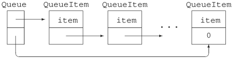

16.4. Class Template MembersSo far we have seen only how to declare the interface members of our Queue class template. In this section, we'll look at how we might implement the class.
Queue Implementation StrategyOur implementation, shown in Figure 16.1 on the next page, uses two classes: Figure 16.1. Queue Implementation
As do the standard containers, our Queue class will copy the values it's given. The QueueItem ClassWe'll start our implementation by writing the QueueItem class:
template <class Type> class QueueItem {
// private class: no public section
QueueItem(const Type &t): item(t), next(0) { }
Type item; // value stored in this element
QueueItem *next; // pointer to next element in the Queue
};
As it stands, this class is already complete: It holds two data elements, which its constructor initializes. Like Queue, QueueItem is a class template. The class uses its template parameter to name the type of its item member. The value of each element in the Queue will be stored in item. Each time we instantiate a Queue class, the same version of QueueItem will be instantiated as well. For example, if we create Queue<int>, then a companion class, QueueItem<int>, will be instantiated. Class QueueItem is a private classit has no public interface. We intend this class to be used to implement Queue and have not built it for general use. Hence, it has no public members. We'll need to make class Queue a friend of QueueItem so that its members can access the members of QueueItem. We'll see how to do so in Section 16.4.4 (p. 658).
The Queue ClassWe can now flesh out our Queue class:
template <class Type> class Queue {
public:
// empty Queue
Queue(): head(0), tail(0) { }
// copy control to manage pointers to QueueItems in the Queue
Queue(const Queue &Q): head(0), tail(0)
{ copy_elems(Q); }
Queue& operator=(const Queue&);
~Queue() { destroy(); }
// return element from head of Queue
// unchecked operation: front on an empty Queue is undefined
Type& front() { return head->item; }
const Type &front() const { return head->item; }
void push(const Type &); // add element to back of Queue
void pop (); // remove element from head of Queue
bool empty () const { // true if no elements in the Queue
return head == 0;
}
private:
QueueItem<Type> *head; // pointer to first element in Queue
QueueItem<Type> *tail; // pointer to last element in Queue
// utility functions used by copy constructor, assignment, and destructor
void destroy(); // delete all the elements
void copy_elems(const Queue&); // copy elements from parameter
};
In addition to the interface members, we have added the three copy-control members (Chapter 13) and associated utility functions used by those members. The private utility functions destroy and copy_elems will do the work of freeing the elements in the Queue and copying elements from another Queue into this one. The copy-control members are needed to manage the data members, head and tail, which are pointers to the first and last elements in the Queue. These elements are values of type QueueItem<Type>. The class implements several of its member functions:
References to a Template Type in the Scope of the TemplateFor the most part, this class definition should be familiar. It differs little from other classes that we have defined. What is new is the use (or lack thereof) of the template type parameter in references to the Queue and QueueItem types. Ordinarily, when we use the name of a class template, we must specify the template parameters. There is one exception to this rule: Inside the scope of the class itself, we may use the unqualified name of the class template. For example, in the declarations of the default and copy constructor the name Queue is a shorthand notation that stands for Queue<Type>. Essentially the compiler infers that when we refer to the name of the class, we are referring to the same version. Hence, the copy constructor definition is really equivalent to writing:
Queue<Type>(const Queue<Type> &Q): head(0), tail(0)
{ copy_elems(Q); }
The compiler performs no such inference for the template parameter(s) for other templates used within the class. Hence, we must specify the type parameter when declaring pointers to the companion QueueItem class:
QueueItem<Type> *head; // pointer to first element in Queue
QueueItem<Type> *tail; // pointer to last element in Queue
These declarations say that for a given instantiation of class Queue, head and tail point to an object of type QueueItem instantiated for the same template parameter. That is, the type of head and tail inside the Queue<int> instantiation is QueueItem<int>*. It would be an error to omit the template parameter in the definition of the head and tail members:
QueueItem *head; // error: which version of QueueItem?
QueueItem *tail; // error: which version of QueueItem?
16.4.1. Class-Template Member FunctionsThe definition of a member function of a class template has the following form:
From these rules, we can see that a member function of class Queue defined outside the class will start as
template <class T> ret-type Queue<T>::member-name
The destroy FunctionTo illustrate a class template member function defined outside its class, let's look at the destroy function:
template <class Type> void Queue<Type>::destroy()
{
while (!empty())
pop();
}
This definition can be read from left to right as:
The use of Queue<Type> preceding the scope operator (::) names the class to which the member function belongs. Following the member-function name is the function definition. In the case of destroy, the function body looks very much like an ordinary nontemplate function definition. Its job is to walk the list of entries in this Queue, calling pop to remove each item. The pop FunctionThe pop member removes the value at the front of the Queue:
template <class Type> void Queue<Type>::pop()
{
// pop is unchecked: Popping off an empty Queue is undefined
QueueItem<Type>* p = head; // keep pointer to head so we can delete it
head = head->next; // head now points to next element
delete p; // delete old head element
}
The pop function assumes that users do not call pop on an empty Queue. The job of pop is to remove the element at the start of the Queue. We must reset the head pointer to point to the next element in the Queue, and then delete the element that had been at the head. The only tricky part is remembering to keep a separate pointer to that element so we can delete it after resetting the head pointer. The push FunctionThe push member places a new item at the back of the queue:
template <class Type> void Queue<Type>::push(const Type &val)
{
// allocate a new QueueItem object
QueueItem<Type> *pt = new QueueItem<Type>(val);
// put item onto existing queue
if (empty())
head = tail = pt; // the queue now has only one element
else {
tail->next = pt; // add new element to end of the queue
tail = pt;
}
}
This function starts by allocating a new QueueItem, which is initialized from the value we were passed. There's actually a surprising bit of work going on in this statement:
Because we're adding the element at the end of the Queue, setting next to 0 is eactly what we want. Having created and initialized a new element, we must next hook it into the Queue. If the Queue is empty, then both head and tail should point to this new element. If there are already other elements in the Queue, then we make the current tail element point to this new element. The old tail is no longer the last element, which we indicate by making tail point to the newly constructed element as well. The copy FunctionAside from the assignment operator, which we leave as an exercise, the only remaining function to write is copy_elems. This function is designed to be used by the assignment operator and copy constructor. Its job is to copy the elements from its parameter into this Queue:
template <class Type>
void Queue<Type>::copy_elems(const Queue &orig)
{
// copy elements from orig into this Queue
// loop stops when pt == 0, which happens when we reach orig.tail
for (QueueItem<Type> *pt = orig.head; pt; pt = pt->next)
push(pt->item); // copy the element
}
We copy the elements in a for loop that starts by setting pt equal to the parameter's head pointer. The for continues until pt is 0, which happens after we get to the element that is the last one in orig. For each element in orig, we push a copy of value in that element onto this Queue and advance pt to point to the next element in orig. Instantiation of Class-Template Member FunctionsMember functions of class templates are themselves function templates. Like any other function template, a member function of a class template is used to generate instantiations of that member. Unlike other function templates, the compiler does not perform template-argument deduction when instantiating class template member functions. Instead, the template parameters of a class template member function are determined by the type of the object on which the call is made. For example, when we call the push member of an object of type Queue<int>, the push function that is instantiated is
void Queue<int>::push(const int &val)
The fact that member-function template parameters are fixed by the template arguments of the object means that calling a class template member function is more flexible than comparable calls to function templates. Normal conversions are allowed on arguments to function parameters that were defined using the template parameter:
Queue<int> qi; // instantiates class Queue<int>
short s = 42;
int i = 42;
// ok: s converted to int and passed to push
qi.push(s); // instantiates Queue<int>::push(const int&)
qi.push(i); // uses Queue<int>::push(const int&)
f(s); // instantiates f(const short&)
f(i); // instantiates f(const int&)
When Classes and Members Are InstantiatedMember functions of a class template are instantiated only for functions that are used by the program. If a function is never used, then that member function is never instantiated. This behavior implies that types used to instantiate a template need to meet only the requirements of the operations that are actually used. As an example, recall the sequential container constructor (Section 9.1.1, p. 309) that takes only a size parameter. That constructor uses the default constructor for the element type. If we have a type that does not define the default constructor, we may still define a container to hold this type. However, we may not use the constructor that takes only a size. When we define an object of a template type, that definition causes the class template to be instantiated. Defining an object also instantiates whichever constructor was used to initialize the object, along with any members called by that constructor:
// instantiates Queue<int> class and Queue<int>::Queue()
Queue<string> qs;
qs.push("hello"); // instantiates Queue<int>::push
The first statement instantiates the Queue<string> class and its default constructor. The next statement instantiates the push member function. The instantiation of the push member:
template <class Type> void Queue<Type>::push(const Type &val)
{
// allocate a new QueueItem object
QueueItem<Type> *pt = new QueueItem<Type>(val);
// put item onto existing queue
if (empty())
head = tail = pt; // the queue now has only one element
else {
tail->next = pt; // add new element to end of the queue
tail = pt;
}
}
in turn instantiates the companion QueueItem<string> class and its constructor. The QueueItem members in Queue are pointers. Defining a pointer to a class template doesn't instantiate the class; the class is instantiated only when we use such a pointer. Thus, QueueItem is not instantiated when we create a Queue object. Instead, the QueueItem class is instanatiated when a Queue member such as front, push, or pop is used.
16.4.2. Template Arguments for Nontype ParametersNow that we've seen more about how class templates are implemented, we can look at nontype parameters for class templates. We'll do so by defining a new version of the Screen class first introduced in Chapter 12. In this case, we'll redefine Screen to be a template, parameterized by its height and width:
template <int hi, int wid>
class Screen {
public:
// template nontype parameters used to initialize data members
Screen(): screen(hi * wid, '#'), cursor (0),
height(hi), width(wid) { }
// ...
private:
std::string screen;
std::string::size_type cursor;
std::string::size_type height, width;
};
This template has two parameters, both of which are nontype parameters. When users define Screen objects, they must provide a constant expression to use for each of these parameters. The class uses these parameters in the default constructor to set the size of the default Screen. As with any class template, the parameter values must be explicitly stated whenever we use the Screen type:
Screen<24,80> hp2621; // screen 24 lines by 80 characters
The object hp2621 uses the template instantiation Screen<24, 80>. The template argument for hi is 24, and the argument for wid is 80. In both cases, the template argument is a constant expression.
16.4.3. Friend Declarations in Class TemplatesThere are three kinds of friend declarations that may appear in a class template. Each kind of declaration declares friendship to one or more entities:
Ordinary FriendsA nontemplate class or function can be a friend to a class template:
template <class Type> class Bar {
// grants access to ordinary, nontemplate class and function
friend class FooBar;
friend void fcn();
// ...
};
This declaration says that the members of FooBar and the function fcn may access the private and protected members of any instantiation of class Bar. General Template FriendshipA friend can be a class or function template:
template <class Type> class Bar {
// grants access to Foo1 or templ_fcn1 parameterized by any type
template <class T> friend class Foo1;
template <class T> friend void templ_fcn1(const T&);
// ...
};
These friend declarations use a different type parameter than does the class itself. That type parameter refers to the type parameter of Foo1 and templ_fcn1. In both these cases, an unlimited number of classes and functions are made friends to Bar. The friend declaration for Foo1 says that any instance of Foo1 may access the private elements of any instance of Bar. Similarly, any instance of templ_fcn1 may access any instance of Bar. This friend declaration establishes a one-to-many mapping between each instantiation of Bar and its friends, Foo1 and templ_fcn1. For each instantiation of Bar, all instantiations of Foo1 or templ_fcn1 are friends. Specific Template FriendshipRather than making all instances of a template a friend, a class can grant access to only a specific instance:
template <class T> class Foo2;
template <class T> void templ_fcn2(const T&);
template <class Type> class Bar {
// grants access to a single specific instance parameterized by char*
friend class Foo2<char*>;
friend void templ_fcn2<char*>(char* const &);
// ...
};
Even though Foo2 itself is a class template, friendship is extended only to the specific instance of Foo2 that is parameterized by char*. Similarly, the friend declaration for templ_fcn2 says that only the instance of that function parameterized by char* is a friend to class Bar. The specific instantiations of Foo2 and templ_fcn2 parameterized by char* can access every instantiation of Bar. More common are friend declarations of the following form:
template <class T> class Foo3;
template <class T> void templ_fcn3(const T&);
template <class Type> class Bar {
// each instantiation of Bar grants access to the
// version of Foo3 or templ_fcn3 instantiated with the same type
friend class Foo3<Type>;
friend void templ_fcn3<Type>(const Type&);
// ...
};
These friends define friendship between a particular instantiation of Bar and the instantiation of Foo3 or templ_fcn3 that uses the same template argument. Each instantiation of Bar has a single associated Foo3 and templ_fcn3 friend:
Bar<int> bi; // Foo3<int> and templ_fcn3<int> are friends
Bar<string> bs; // Foo3<string>, templ_fcn3<string> are friends
Only those versions of Foo3 or templ_fcn3 that have the same template argument as a given instantiation of Bar are friends. Thus, Foo3<int> may access the private parts of Bar<int> but not of Bar<string> or any other instantiation of Bar. Declaration DependenciesWhen we grant access to all instances of a given template, there need not be a declaration for that class or function template in scope. Essentially, the compiler treats the friend declaration as a declaration of the class or function as well. When we want to restrict friendship to a specific instantiation, then the class or function must have been declared before it can be used in a friend declaration:
template <class T> class A;
template <class T> class B {
public:
friend class A<T>; // ok: A is known to be a template
friend class C; // ok: C must be an ordinary, nontemplate class
template <class S> friend class D; // ok: D is a template
friend class E<T>; // error: E wasn't declared as a template
friend class F<int>; // error: F wasn't declared as a template
};
If we have not previously told the compiler that the friend is a template, then the compiler will infer that the friend is an ordinary nontemplate class or function. 16.4.4. Queue and QueueItem Friend DeclarationsOur QueueItem class is not intended to be used by the general program: All its members are private. In order for Queue to use QueueItem, QueueItem must make Queue a friend. Making a Class Template a FriendAs we have just seen, when making a class template a friend, the class designer must decide how wide to make that friendship. In the case of QueueItem, we need to decide whether QueueItem should grant friendship to all Queue instances or only to a specific instance. Making every Queue a friend of each QueueItem is too broad. It makes no sense to allow a Queue instantiated with the type string to access members of a QueueItem instantiated with type double. The Queue<string> instantiation should be a friend only to the instantiation of the QueueItem for strings. That is, we want a one-to-one mapping between a Queue and QueueItem for each type of Queue that is instantiated:
// declaration that Queue is a template needed for friend declaration in QueueItem
template <class Type> class Queue;
template <class Type> class QueueItem {
friend class Queue<Type>;
// ...
};
This declaration establishes the desired one-to-one mapping; only the Queue class that is instantiated with the same type as QueueItem is made a friend. The Queue Output OperatorOne operation that might be useful to add to our Queue interface is the ability to print the contents of a Queue object. We'll do so by providing an overloaded instance of the output operator. This operator will walk the list of elements in the Queue and print the value in each element. We'll print the elements inside a pair of brackets. Because we want to be able to print the contents of Queues of any type, we need to make the output operator a template as well:
template <class Type>
ostream& operator<<(ostream &os, const Queue<Type> &q)
{
os << "< ";
QueueItem<Type> *p;
for (p = q.head; p; p = p->next)
os << p->item << " ";
os <<">";
return os;
}
If a Queue of type int contains the values 3, 5, 8, and 13, the output of this Queue displays as follows:
<3 5 8 13 >
If the Queue is empty, the for loop body is never executed. The effect will be to print an empty pair of brackets if the Queue is empty. Making a Function Template a FriendThe output operator needs to be a friend of both the Queue and QueueItem classes. It uses the head member of class Queue and the next and item members of class QueueItem. Our classes grant friendship to the specific instance of the output operator instantiated with the same type:
// function template declaration must precede friend declaration in QueueItem
template <class T>
std::ostream& operator<<(std::ostream&, const Queue<T>&);
template <class Type> class QueueItem {
friend class Queue<Type>;
// needs access to item and next
friend std::ostream&
operator<< <Type> (std::ostream&, const Queue<Type>&);
// ...
};
template <class Type> class Queue {
// needs access to head
friend std::ostream&
operator<< <Type> (std::ostream&, const Queue<Type>&);
};
Each friend declaration grants access to the corresponding instantiation of the operator<<. That is, the output operator that prints a Queue<int> is a friend to class Queue<int> (and QueueItem<int>). It is not a friend to any other Queue type. Type Dependencies and the Output OperatorThe Queue output operator<< relies on the operator<< of item to actually print each element:
os << p->item << " ";
When we use p->item as an operand of the << operator, we are using the << defined for whatever type item has. This code is an example of a type dependency between Queue and the element type that Queue holds. In effect, each type bound to Queue that uses the Queue output operator must itself have an output operator. There is no language mechanism to specify or enforce that dependency in the definition of Queue itself. It is legal to create a Queue for a class that does not define the output operator but it is a compile-time (or link-time) error to print a Queue holding such a type.
16.4.5. Member TemplatesAny class (template or otherwise) may have a member that is itself a class or function template. Such members are referred to as member templates. Member templates may not be virtual. One example of a member template is the assign (Section 9.3.8, p. 328) member of the standard containers. The version assign that takes two iterators uses a template parameter to represent the type of its iterator parameters. Another member template example is the container constructor that takes two iterators (Section 9.1.1, p. 307). This constructor and the assign member allow containers to be built from sequences of different but compatible element types and/or different container types. Having implemented our own Queue class, we now can understand the design of these standard container members a bit better. Consider the Queue copy constructor: It takes a single parameter that is a reference to a Queue<Type>. If we wanted to create a Queue by copying elements from a vector, we could not do so; there is no conversion from vector to Queue. Similarly, if we wanted to copy elements from a Queue<short> into a Queue<int>, we could not do so. Again, even though we can convert a short to an int, there is no conversion from Queue<short> to Queue<int>. The same logic applies to the Queue assignment operator, which also takes a parameter of type Queue<Type>&. The problem is that the copy constructor and assignment operator fix both the container and element type. We'd like to define a constructor and an assign member that allow both the container and element type to vary. When we need a parameter type to vary, we need to define a function template. In this case, we'll define the constructor and assign member to take a pair of iterators that denote a range in some other sequence. These functions will have a single template type parameter that represents an iterator type.
Defining a Member TemplateA template member declaration looks like the declaration of any template:
template <class Type> class Queue {
public:
// construct a Queue from a pair of iterators on some sequence
template <class It>
Queue(It beg, It end):
head(0), tail(0) { copy_elems(beg, end); }
// replace current Queue by contents delimited by a pair of iterators
template <class Iter> void assign(Iter, Iter);
// rest of Queue class as before
private:
// version of copy to be used by assign to copy elements from iterator range
template <class Iter> void copy_elems(Iter, Iter);
};
The member declaration starts with its own template parameter list. The constructor and assign member each have a single template type parameter. These functions use that type parameter as the type for their function parameters, which are iterators denoting a range of elements to copy. Defining a Member Template Outside the ClassLike nontemplate members, a member template can be defined inside or outside of its enclosing class or class template definition. We have defined the constructor inside the class body. Its job is to copy the elements from the iterator range formed by its iterator arguments. It does so by calling the iterator version of copy_elems to do the actual copy. When we define a member template outside the scope of a class template, we must include both template parameter lists:
template <class T> template <class Iter>
void Queue<T>::assign(Iter beg, Iter end)
{
destroy(); // remove existing elements in this Queue
copy_elems(beg, end); // copy elements from the input range
}
When a member template is a member of a class template, then its definition must include the class-template parameters as well as its own template parameters. The class-template parameter list comes first, followed by the member's own template parameter list. The definition of assign starts with
template <class T> template <class Iter>
The first template parameter list template<class T>is that of the class template. The second template parameter list template<class Iter>is that of the member template. The actions of our assign function are quite simple: It first calls destroy, which, as we've seen, frees the existing members of this Queue. The assign member then calls a new utility function named copy_elems to do the work of copying elements from the input range. That function is also a member template:
template <class Type> template <class It>
void Queue<Type>::copy_elems(It beg, It end)
{
while (beg != end) {
push(*beg);
++beg;
}
}
The iterator version of copy_elems walks through an input range denoted by a pair of iterators. It calls push on each element in that range, which actually adds the element to the Queue.
Member Templates Obey Normal Access ControlA member template follows the same access rules as any other class members. If the member template is private, then only member functions and friends of the class can use that member template. Because the function member template assign is a public member, it can be used by the entire program; copy_elems is private, so it can be accessed only by the friends and members of Queue. Member Templates and InstantiationLike any other member, a member template is instantiated only when it is used in a program. The instantiation of member templates of class templates is a bit more complicated than the instantiation of plain member functions of class templates. Member templates have two kinds of template parameters: Those that are defined by the class and those defined by the member template itself. The class template parameters are fixed by the type of the object through which the function is called. The template parameters defined by the member act like parameters of ordinary function templates. These parameters are resolved through normal template argument deduction (Section 16.2.1, p. 637). To understand how instantiation works, let's look at uses of these members to copy and assign elements from an array of shorts or a vector<int>:
short a[4] = { 0, 3, 6, 9 };
// instantiates Queue<int>::Queue(short *, short *)
Queue<int> qi(a, a + 4); // copies elements from a into qi
vector<int> vi(a, a + 4);
// instantiates Queue<int>::assign(vector<int>::iterator,
// vector<int>::iterator)
qi.assign(vi.begin(), vi.end());
Because we are constructing an object of type Queue<int>, we know that the compiler will instantiate the iterator-based constructor for Queue<int>. The type of the constructor's own template parameter is deduced by the compiler from the type of a and a +4. That type is pointer to short. Thus, the definition of qi instantiates
void Queue<int>::Queue(short *, short *);
The effect of this constructor is to copy the elements of type short from the array named a into qi. The call to assign instantiates a member of qi, which has type Queue<int>. Thus, this call instantiates the Queue<int> member named assign. That function is itself a function template. As with any other function template, the compiler deduces the template argument for assign from the arguments to the call. The type deduced is vector<int>::iterator, meaning that this call instantiates
void Queue<int>::assign(vector<int>::iterator,
vector<int>::iterator);
16.4.6. The Complete Queue ClassFor completeness, here is the final definition of our Queue class:
// declaration that Queue is a template needed for friend declaration in QueueItem
template <class Type> class Queue;
// function template declaration must precede friend declaration in QueueItem
template <class T>
std::ostream& operator<<(std::ostream&, const Queue<T>&);
template <class Type> class QueueItem {
friend class Queue<Type>;
// needs access to item and next
friend std::ostream& // defined on page 659
operator<< <Type> (std::ostream&, const Queue<Type>&);
// private class: no public section
QueueItem(const Type &t): item(t), next(0) { }
Type item; // value stored in this element
QueueItem *next; // pointer to next element in the Queue
};
template <class Type> class Queue {
// needs access to head
friend std::ostream& // defined on page 659
operator<< <Type> (std::ostream&, const Queue<Type>&);
public:
// empty Queue
Queue(): head(0), tail(0) { }
// construct a Queue from a pair of iterators on some sequence
template <class It>
Queue(It beg, It end):
head(0), tail(0) { copy_elems(beg, end); }
// copy control to manage pointers to QueueItems in the Queue
Queue(const Queue &Q): head(0), tail(0)
{ copy_elems(Q); }
Queue& operator=(const Queue&); // left as exercise for the reader
~Queue() { destroy(); }
// replace current Queue by contents delimited by a pair of iterators
template <class Iter> void assign(Iter, Iter);
// return element from head of Queue
// unchecked operation: front on an empty Queue is undefined
Type& front() { return head->item; }
const Type &front() const { return head->item; }
void push(const Type &);// defined on page 652
void pop(); // defined on page 651
bool empty() const { // true if no elements in the Queue
return head == 0;
}
private:
QueueItem<Type> *head; // pointer to first element in Queue
QueueItem<Type> *tail; // pointer to last element in Queue
// utility functions used by copy constructor, assignment, and destructor
void destroy(); // defined on page 651
void copy_elems(const Queue&); // defined on page 652
// version of copy to be used by assign to copy elements from iterator range
// defined on page 662
template <class Iter> void copy_elems(Iter, Iter);
};
// Inclusion Compilation Model: include member function definitions as well
#include "Queue.cc"
Members that are not defined in the class itself can be found in earlier sections of this chapter; the comment following such members indicates the page on which the definition can be found.
16.4.7. static Members of Class TemplatesA class template can declare static members (Section 12.6, p. 467) in the same way as any other class:
template <class T> class Foo {
public:
static std::size_t count() { return ctr; }
// other interface members
private:
static std::size_t ctr;
// other implementation members
};
defines a class template named Foo that among other members has a public static member function named count and a private static data member named ctr. Each instantiation of class Foo has its own static member:
// Each object shares the same Foo<int>::ctrand Foo<int>::count members
Foo<int> fi, fi2, fi3;
// has static members Foo<string>::ctrand Foo<string>::count
Foo<string> fs;
Each instantiation represents a distinct type, so there is one static shared among the objects of any given instantiation. Hence, any objects of type Foo<int> share the same static member ctr. Objects of type Foo<string> share a different ctr member. Using a static Member of a Class TemplateAs usual, we can access a static member of a class template through an object of the class type or by using the scope operator to access the member directly. Of course, when we attempt to use the static member through the class, we must refer to an actual instantiation:
Foo<int> fi, fi2; // instantiates Foo<int> class
size_t ct = Foo<int>::count(); // instantiates Foo<int>::count
ct = fi.count(); // ok: uses Foo<int>::count
ct = fi2.count(); // ok: uses Foo<int>::count
ct = Foo::count(); // error: which template instantiation?
Like any other member function, a static member function is instantiated only if it is used in a program. Defining a static MemberAs with any other static data member, there must be a definition for the data member that appears outside the class. In the case of a class template static, the member definition must inidicate that it is for a class template:
template <class T>
size_t Foo<T>::ctr = 0; // define and initialize ctr
A static data member is defined like any other member of a class template that is defined outside the class. It begins with the keyword template followed by the class template parameter list and the class name. In this case, the name of the static data member is prefixed by Foo<T>::, which indicates that the member belongs to the class template Foo. |